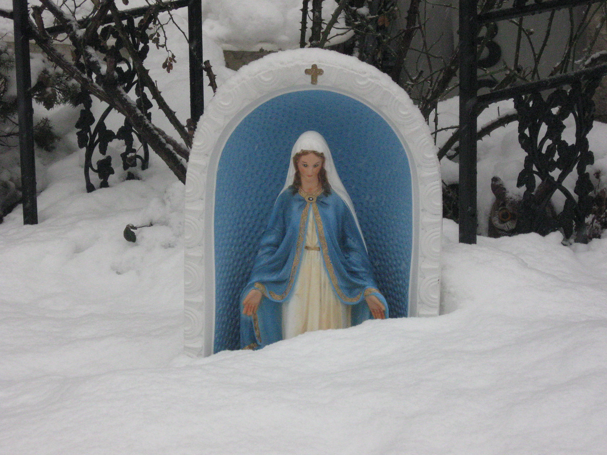

Sunday, December the 11th, 2011
back to: title, date or indexes
A letter arrives from Poppy Nisbet:
Dear Mr Key, I have been enjoying your advent calendar very much and have dutifully been printing out the pictures and pasting them with glue to a sheet of cardboard, as you recommend. May I make a request? For many years I have been absolutely fascinated by the Wobbling Virgin of Ballinspittle, and I think she would make a fine addition to the calendar.
It's a nice idea, but getting a snap of the Wobbling Virgin actually in the act of wobbling has proved impossible. Instead, I hope Ms Nisbet, and indeed all of you, will make do with the equally splendid Our Lady of the Arctic Wastes.

Courtesy of abelincolnjr
ADDENDUM : Ruth Bosch writes “Dear Mr. Key, In my yoot I had some friends who comprised a BVM (Blessed Virgin Mary) SWAT team. Their mission being to regularly move a very heavy concrete statue, under cover of darkness and from place to place, so that when the chosen households looked out their morning windows THERE she was. A miracle. They sustained quite a few injuries in the course of this project.”